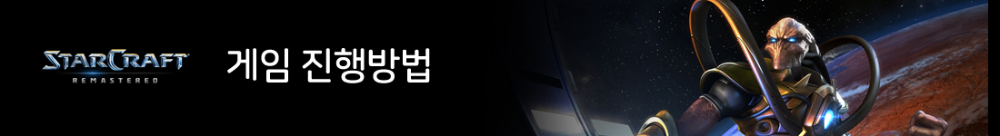

| |
 |
 |
| |
|  |
| |
|
| |
플레이어는 미네랄, 가스, 인구라는 3가지 요소를 갖고 게임을 시작한다.
게임이 시작되면 플레이어는 건물하나와 일꾼6마리를 부여받는다.
이 건물은 일꾼들이 돈을 수집할 수 있는 창고역할을 한다.
건물앞에는 미네랄과 가스가 비치되어 있다. 이제 플레이어는 처음에 부여된 일꾼 6마리를 이용해 돈을
모은후에 점점 더 많은 일꾼들을 뽑고 더 많은 건물들을 지을 수 잇다. 새로운 건물에서 일꾼이 아닌 공
격유닛을 뽑은 후에 상대방에게 공격을 가할 수 있다.
하지만 상대방도 그 시간에 공격유닛을 뽑을 수
있기 때문에 쉽지 않은 공격이 될 것이다. 플레이어는 공격유닛 뿐만 아니라 지능적으로 전략을 짤 수
있는 마법유닛도 뽑을 수 있다. 마법유닛은 공격보다는 지능적으로 플레이 하기에 최적화된 유닛이다.
예를 들면 순간이동을 한다거나, 번개를 날리거나, 상대방에게 독을 뿌려 느리게 할수 있다.
이러한 유닛들을 사용해서 상대방의 건물이 하나도 남지않도록 모두 제거해버리면 게임에서 승리한다. |
|
| |
| |
| |
| ©2019 Starcraft by BLIZZARD ENTERTAINMENT, INC. |
| |
| |
|